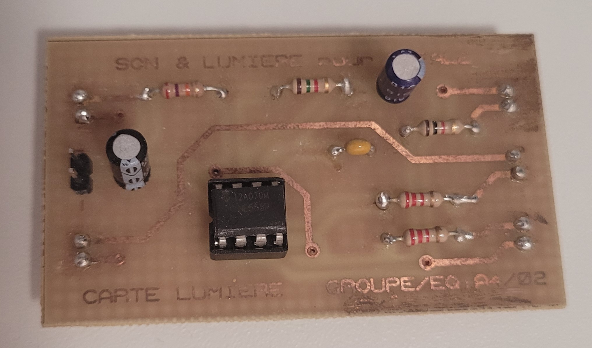

Électronique — BUT GEII 1ère année
Carte Son et Lumière — Rafale
Composants utilisés
Dans le cadre de ma première année de BUT GEII, j'ai conçu en binôme une carte électronique reproduisant le système d'éclairage d'un avion de chasse Rafale. Ce projet avait pour objectif de nous faire découvrir l'ensemble du processus de création d'une carte électronique, de la lecture du cahier des charges à la réalisation physique du circuit.
La carte fonctionne de la manière suivante : une fois alimentée, elle allume en permanence une LED rouge et une LED verte, reproduisant les feux de navigation fixes du Rafale. Un circuit génère également un signal oscillant qui fait clignoter une LED jaune à fréquence prédéterminée, imitant le feu anti-collision de l'appareil. Le schéma est organisé en quatre blocs fonctionnels. Le bloc alimentation fournit la tension nécessaire à l'ensemble du circuit. Le bloc acquisition reçoit le signal d'entrée. Le bloc traitement repose sur un timer NE555 câblé en mode astable qui génère le signal de clignotement. Enfin, le bloc action pilote les trois LEDs : la rouge et la verte sont alimentées en continu, tandis que la jaune clignote au rythme du signal généré par le NE555.
Ce projet m'a permis de lire et concevoir un schéma électronique structuré par blocs fonctionnels, et de réaliser concrètement un circuit imprimé.
← Retour aux projets